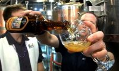

Inspired Beers for Sinners and Saints Alike, The Lost Abbey checks in with a remarkable beer that is a step above crowd . Tomme Arthur and the Port Brewing Company continue to produce excellent beers, and the Avant Garde is no exception!